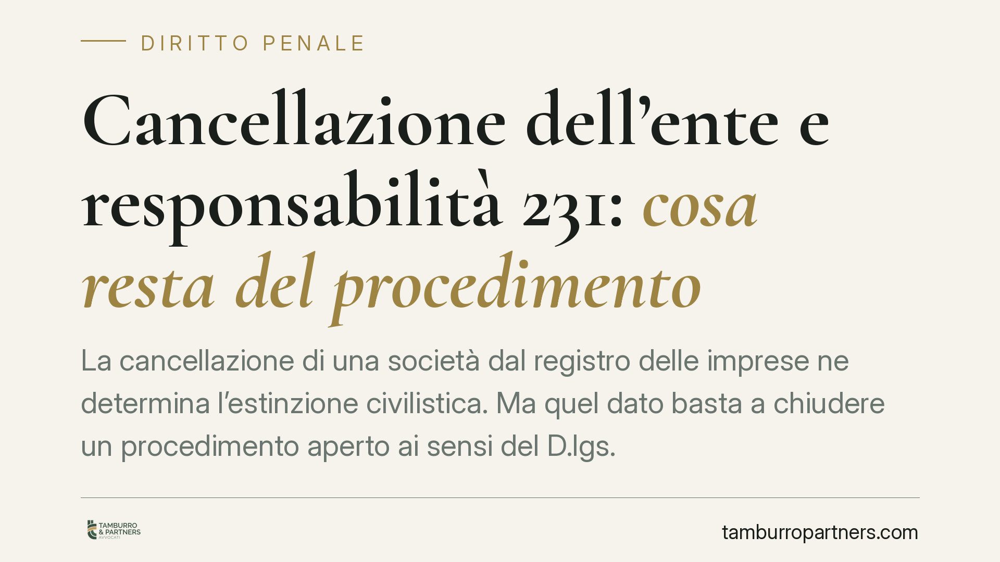

Cancellazione dell'ente e responsabilità 231: cosa resta del procedimento
La cancellazione di una società dal registro delle imprese ne determina l'estinzione civilistica. Ma quel dato basta a chiudere un procedimento aperto ai sensi del D.lgs. 231/2001? Il tema è dibattuto in giurisprudenza e tocca un nodo delicato: la sorte della confisca del profitto del reato. Una lettura sintetica dell'orientamento di legittimità e delle sue ricadute operative.

Il caso e il nodo giuridico
Quando una società viene cancellata dal registro delle imprese si estingue come soggetto di diritto. La regola civilistica è nell'art. 2495 c.c.: dopo la cancellazione i creditori insoddisfatti possono agire nei confronti dei soci, nei limiti di quanto riscosso in base al bilancio finale di liquidazione, e nei confronti dei liquidatori, se il mancato pagamento dipende da loro colpa.
La questione diventa complessa quando, a carico dell'ente, pende un procedimento per responsabilità amministrativa da reato ai sensi del D.lgs. 231/2001. Qui l'estinzione civilistica incrocia il diritto punitivo. Il problema non è teorico: riguarda la legittimazione passiva dell'ente ormai estinto, la possibilità di proseguire il procedimento e — soprattutto — la sorte della confisca del profitto o del prezzo del reato prevista dall'art. 19 del decreto.
Inquadramento normativo
Il D.lgs. 231/2001 non contiene una disciplina espressa dell'estinzione dell'ente per cancellazione. Regola invece le vicende modificative con gli artt. 28-33 (Capo I, Sezione III): trasformazione, fusione, scissione e cessione d'azienda. In quei casi il legislatore ha previsto meccanismi di continuità della responsabilità, per evitare che la riorganizzazione societaria si traduca in un varco per sottrarsi alle sanzioni. La cancellazione a seguito di liquidazione, tuttavia, resta fuori da quel perimetro testuale.
Da questo vuoto discende il contrasto interpretativo. Un primo indirizzo valorizza l'assenza di un meccanismo estintivo espresso e il rischio di usi elusivi della liquidazione: la cancellazione non chiuderebbe automaticamente il procedimento, quantomeno rispetto alle misure di carattere recuperatorio. Un diverso indirizzo evidenzia che, venuta meno la soggettività dell'ente, si pone un problema di legittimazione passiva: il procedimento proseguirebbe verso un soggetto non più esistente, con difficoltà sistematiche non trascurabili.
Sul punto è intervenuta la giurisprudenza di legittimità, chiamata a bilanciare l'esigenza di evitare la fuga dalla responsabilità con i principi che governano l'estinzione dei soggetti collettivi. In assenza di una massima consolidata e univoca, va segnalato che il quadro non è pacifico: chi opera in questo ambito deve trattare la materia come controversa, non come definita.
Il vero snodo: l'estinzione e la confisca
Il cuore della questione non è tanto la prosecuzione del giudizio in sé, quanto la permanenza della confisca ex art. 19 D.lgs. 231/2001. La confisca del profitto o del prezzo del reato ha natura ripristinatoria: mira a sottrarre all'ente il vantaggio economico illecito. Se quel profitto è transitato nel patrimonio distribuito ai soci in sede di liquidazione, l'estinzione della società non lo rende automaticamente irrecuperabile.
È qui che l'art. 2495 c.c. torna centrale. Il collegamento tra la responsabilità dell'ente e la posizione di soci e liquidatori consente di riflettere sulla possibilità che le pretese di carattere recuperatorio non si esauriscano con la mera cancellazione. La liquidazione, in altre parole, non funziona come schermo impermeabile se dietro vi è stata la distribuzione di un profitto illecito.
Implicazioni pratiche
Per l'ente, per i soci e per gli organi di liquidazione, la cancellazione non equivale a una garanzia di chiusura. Chi valuta la scelta di liquidare una società con un procedimento 231 pendente, o con un rischio-reato non ancora prescritto, deve considerare che l'operazione può non produrre l'effetto liberatorio atteso e può esporre a responsabilità personali chi ha gestito la fase estintiva.
Parallelo il tema delle operazioni straordinarie: trasformazione, fusione e scissione trasferiscono la responsabilità secondo le regole degli artt. 28-33, e in questi scenari l'Organismo di Vigilanza mantiene un ruolo di presidio nella verifica dei rischi ereditati.
Cosa fare in concreto
- Verificare, prima di avviare la liquidazione, l'esistenza di procedimenti 231 pendenti o di rischi-reato non prescritti a carico dell'ente.
- Documentare con precisione il bilancio finale di liquidazione e la destinazione delle somme distribuite ai soci, in funzione dei limiti dell'art. 2495 c.c.
- Valutare la posizione dei liquidatori, esposti a responsabilità per il mancato soddisfacimento dei crediti dipendente da loro colpa.
- Nelle operazioni straordinarie, mappare la responsabilità 231 trasferibile ai sensi degli artt. 28-33 e coinvolgere l'Organismo di Vigilanza nella due diligence.
- Evitare qualsiasi impiego della liquidazione come strumento per sottrarsi a sanzioni o alla confisca del profitto illecito.
---
Contributo informativo a cura di Tamburro & Partners - Avv. Giuseppe Tamburro. Non costituisce parere legale.
Ogni condominio ha una storia a sé.
Se gestisci un'amministrazione e vuoi un confronto su una specifica questione condominiale, scrivi allo studio. Ti rispondiamo entro un giorno lavorativo.